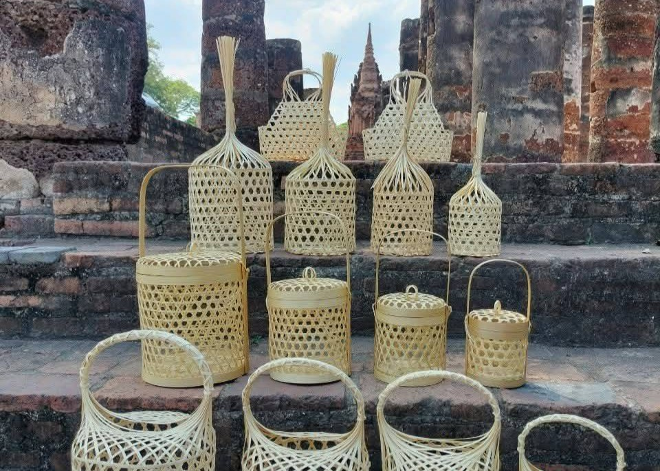
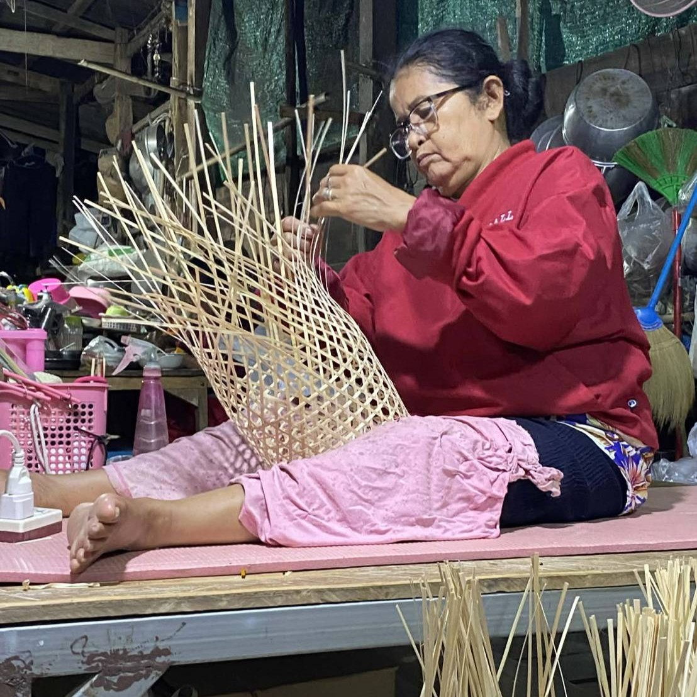

ชะลอมสานของเรา
ผลิตจากไม้ไผ่ธรรมชาติ สานด้วยความประณีต เหมาะสำหรับใช้ในงานบุญ งานประเพณี และเป็นของฝากจากชุมชน
ชะลอมสานเป็นงานหัตถกรรมพื้นบ้านที่ทำจากไม้ไผ่ธรรมชาติ สืบทอดภูมิปัญญาการสานจากรุ่นสู่รุ่น ใช้งานได้จริง เหมาะกับงานบุญ งานประเพณี และการบรรจุสินค้า

ผลิตจากไม้ไผ่ธรรมชาติ สานด้วยความประณีต เหมาะสำหรับใช้ในงานบุญ งานประเพณี และเป็นของฝากจากชุมชน
ใช้ไม้ไผ่จากธรรมชาติ เป็นมิตรต่อสิ่งแวดล้อม
สานด้วยมือทุกชิ้น มีเอกลักษณ์เฉพาะตัว
สืบทอดความรู้จากรุ่นสู่รุ่น
เหมาะสำหรับงานบุญ งานประเพณี และของฝาก
